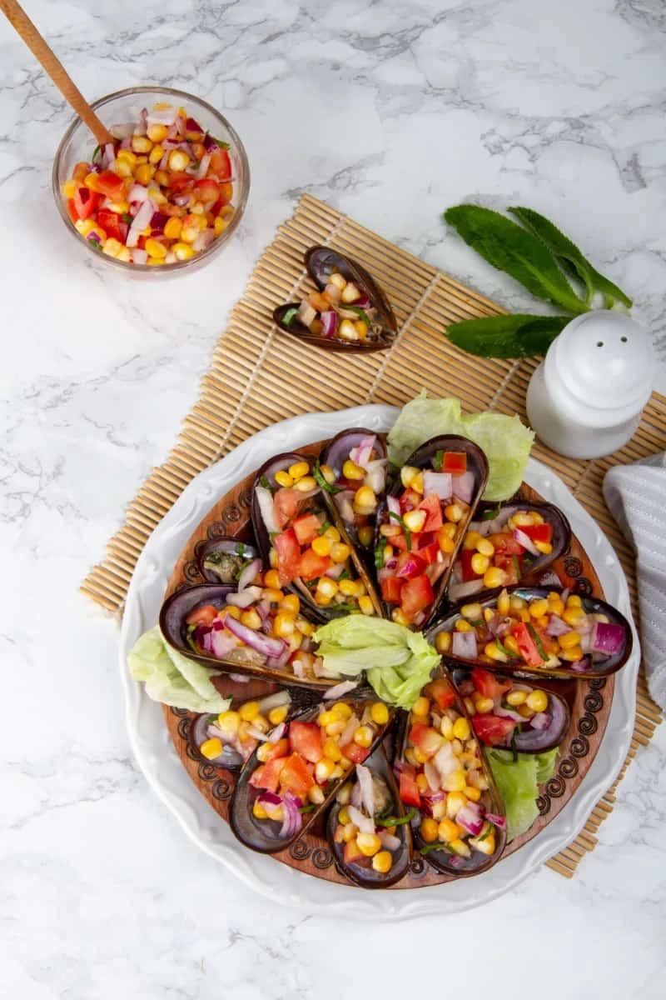

Directions
- It is very important to clean the mussels. Fresh mussels will still have closed shells, so look for these.
In any case, place the mussels in a bowl full of water, under running water.
Brush the surface of each with a wire brush. With the tip of a sharp knife remove the remains of any mollusks or small snails that are attached to the shells.
Open the mussels with the tip of the knife and rinse inside.
- Place the mussels in a cup filled with four tablespoons of vinegar and water for 30 minutes.
- Place four cups of water in a medium saucepan with a tablespoon of salt, the celery stalk and the carrot.
Let the water boil for about 15 minutes to extract the flavor of the vegetables. If you wish you can add two garlic and onion.
This will serve to improve the taste of mussels, although this step is not essential.
- Add the mussels and cook uncovered for about five to ten minutes until they are cooked. Drain the water and let the steamed mussels cool.
- In another small pot, add the remaining two cups of water and bring to a boil over high heat.
When it is boiling add the corn and cook it for about 5 minutes until they are very soft. Drain the water, let them drain and reserve.
- On a cutting board cut the white onion and purple onion into small squares.
- In a mixing bowl add the oil, the rest of the vinegar, the juice of the lemons. Add salt and pepper to taste. Place the onions in this container and stir.
- Peel the tomatoes, extract the seeds and cut into small squares. Finally, cut the culantro. Mix the tomato and the culantro with the onions and the corn.
Stir very well. Taste and add salt.
- Open the steamed mussels. Place all mussels on a plate (with shells), and with a teaspoon add a tablespoon of salad on top of each shell.
- Before consuming, add one last splash of lemon and some chopped cilantro.